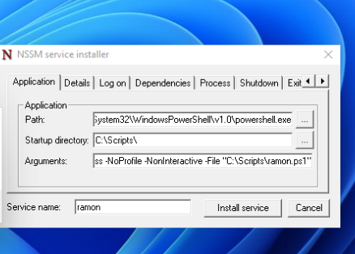
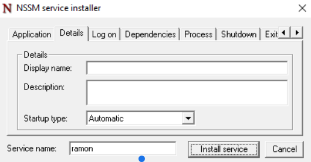
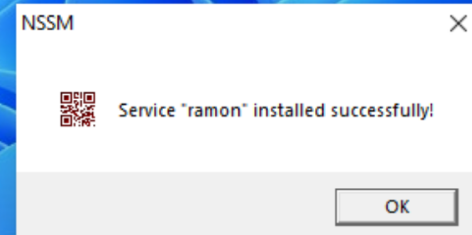
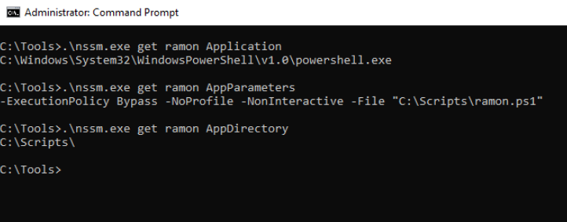
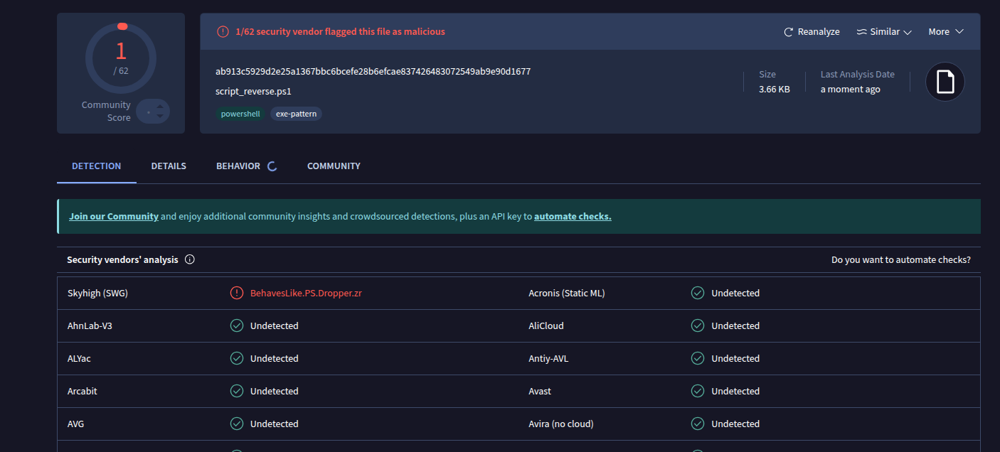
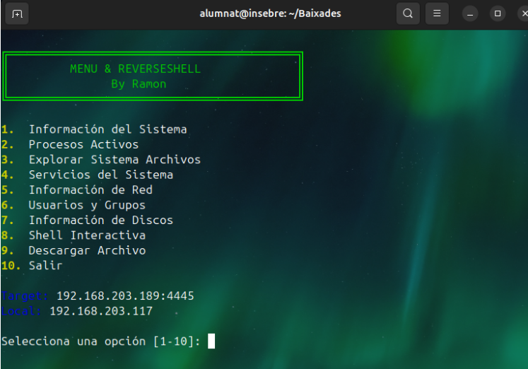

Configuració d'un Servei amb NSSM
Què és NSSM?
NSSM (Non-Sucking Service Manager) és un gestor de serveis de codi obert per a Windows. El seu propòsit principal és permetre que qualsevol aplicació o script s'executi de manera fiable com un servei de Windows.
Característiques clau:
- Fiabilitat: Pot reiniciar automàticament l'aplicació si falla o s'atura inesperadament.
- Flexibilitat: Permet configurar paràmetres detallats del servei (entorn, dependències, retards de reinici, etc.).
- Simplicitat: Facilita la instal·lació i desinstal·lació de serveis mitjançant la línia d'ordres o una interfície gràfica (GUI).
Pas 1: Instal·lar el Servei amb NSSM (Mode Gràfic)
Aquesta secció documenta el procés utilitzant la interfície gràfica de NSSM per al servei anomenat ramon, el qual executa un script de PowerShell.
1.1. Iniciar la Interfície Gràfica
Executeu NSSM des del directori on es troba l'executable per obrir el quadre de diàleg d'instal·lació:
nssm install
1.2. Pestaña "Application" (Aplicació)
Aquí definim l'executable de PowerShell i els arguments necessaris per executar el nostre script.
-
Path (Ruta): La ruta completa a l'executable de PowerShell.
C:\Windows\System32\WindowsPowerShell\v1.0\powershell.exe
-
Startup directory (Directori d'inici): El directori on es troba el vostre script.
C:\Scripts\
-
Arguments: Els arguments per executar el script de manera no interactiva.
-ExecutionPolicy Bypass -NoProfile -NonInteractive -File "C:\Scripts\ramon.ps1"
-
Service name (Nom del Servei): El nom curt del servei.
ramon

1.3. Pestaña "Details" (Detalls)
Configurem el tipus d'inici del servei.
- Startup type (Tipus d'inici): Seleccioneu Automatic per assegurar que el servei s'iniciï automàticament amb el sistema.

1.4. Instal·lar i Confirmació
Feu clic a Install service per completar el procés. El sistema confirmarà la instal·lació.

Comprovacions de la Configuració (Línia d'Ordres)
Un cop el servei està instal·lat, podem verificar la configuració que ha guardat NSSM utilitzant la línia d'ordres.
2.1. Comprovar l'Executable Principal (Application Path)
Verifica la ruta de l'executable que es llançarà:
C:\Tools>.\nssm.exe get ramon Application
Sortida esperada:
C:\Windows\System32\WindowsPowerShell\v1.0\powershell.exe
2.2. Comprovar els Paràmetres/Arguments de l'Aplicació
Verifica els arguments passats a l'executable de PowerShell:
C:\Tools>.\nssm.exe get ramon AppParameters
Sortida esperada:
-ExecutionPolicy Bypass -NoProfile -NonInteractive -File "C:\Scripts\ramon.ps1"
2.3. Comprovar el Directori de Treball (Startup Directory)
Verifica el directori des d'on s'executarà el servei:
C:\Tools>.\nssm.exe get ramon AppDirectory
Sortida esperada:
C:\Scripts\

Comprovacio final i scripts
-
Script del windows el qual obrira una connexio per poder accedir de manera silenciosa es camufla fent-se passar per un proces normal del powersell sense saber la ubicacio del script, aixi mateix es indetectable.
-
Script per a que el ubuntu es pugue conectar al windows per poder teir control total.

Per descarregar tots els fitxers del projecte, fes clic a l'enllaç següent:
Descarregar Repositori Complet (Fitxer ZIP)
Comprovacio que funciona
